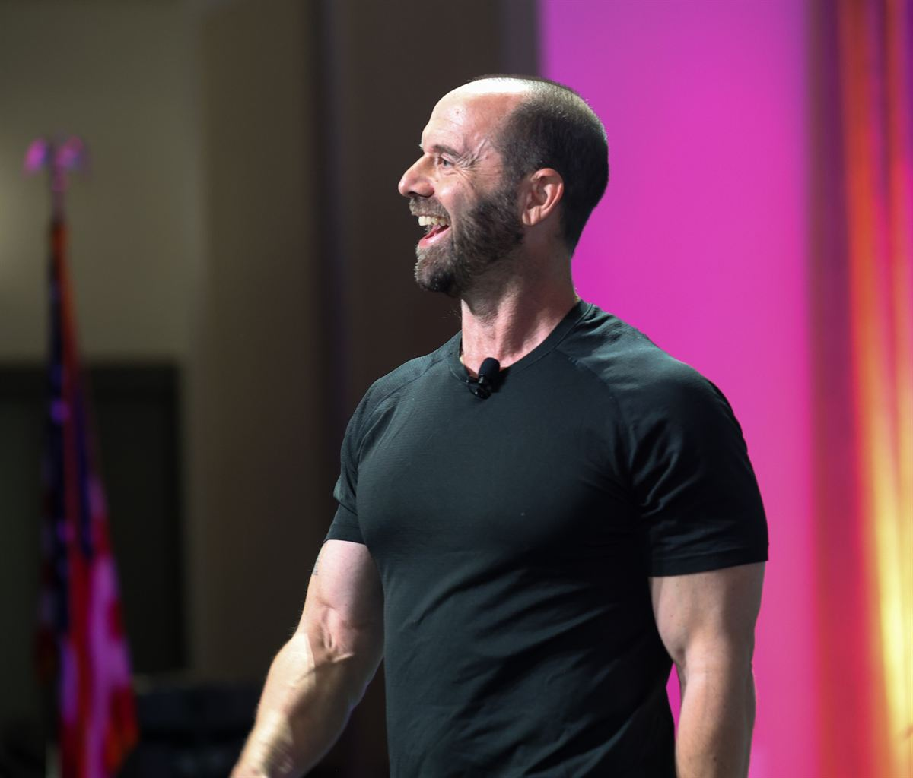

My life is devoted to the science of human fulfillment.
Todd Kashdan is a Professor of Psychology at George Mason University and ranks among the top 1% of most-cited scientists in the world. He is a leading expert on purpose in life, curiosity, psychological flexibility, and social relationships.

Todd writes and speaks about current science in plain language, with plenty of humor. More than 5 million people have read his writing in Psychology Today and his Substack newsletter, Provoked.
Todd founded the Well-Being Lab at George Mason University, which has published more than 250 peer-reviewed articles on purpose and meaning, curiosity, creativity, resilience, anxiety, and psychological strengths. His research earned the American Psychological Association’s 2013 Distinguished Early Career Researcher Award, and it is the backbone of his talks for organizations such as Microsoft, Lululemon, Mercedes-Benz, and the World Bank. He is also an award-winning teacher: George Mason named him its Distinguished Faculty Member of the Year in 2010.
He has written five books, including Curious?, The Upside of Your Dark Side, and The Art of Insubordination. His next, On Purpose: The Science of Building a Meaningful Life, arrives from Ten Speed Press in 2027.
Todd exercises relentlessly for the freedom to eat copious amounts of steak, whiskey, and Italian Rainbow Square cookies. He is a twin and the father of twins (plus one more), with plans to populate the world with great conversationalists.

Want the full bio or photos?
Everything a host or journalist needs is in the press kit.